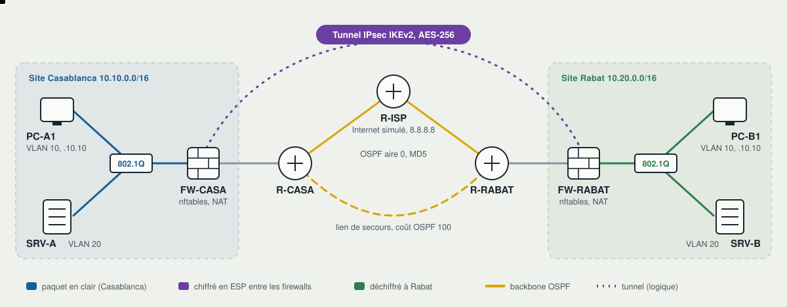

Deux sites, un tunnel chiffré, dix‑sept tests.
Un réseau d'entreprise entre Casablanca et Rabat, monté par un seul script : routage OSPF avec lien de secours, firewalls qui filtrent et traduisent, VPN IPsec IKEv2. Chaque promesse du schéma est vérifiée par un test et prouvée par une capture.

Faites défiler le schéma horizontalement.
Ce que le labo prouve
Les compétences demandées dans les offres « ingénieur réseaux et sécurité », chacune reliée au test qui la vérifie.
| Compétence | Mise en œuvre | Vérifié par |
|---|---|---|
| Routage dynamique | OSPF aire 0 entre trois routeurs FRRouting, authentification MD5, lien de secours au coût 100 | T01 à T04 |
| Segmentation | VLAN 10 utilisateurs et VLAN 20 serveurs, trunk 802.1Q, routage inter-VLAN sur le firewall | T05, T09 |
| Filtrage | nftables en liste blanche : tout ce qui n'est pas autorisé est refusé et compté | T06 à T08 |
| NAT | Traduction des adresses privées vers Internet, exemption pour le trafic de site à site | T10 |
| VPN | IPsec IKEv2, AES-256, SHA-256, groupe DH 14, clé régénérée à chaque démarrage | T11 à T15 |
| Haute disponibilité | Bascule automatique sur panne franche et sur panne silencieuse du backbone | T16, T17 |
| Automatisation | Déploiement en une commande, tests reproductibles, exécution à chaque modification par GitHub Actions | CI |
La preuve par la capture
Extraits réels de captures/, enregistrés sur le lien entre R-CASA et R-ISP, là où passerait l'opérateur.
Les routeurs signent leurs annonces
Un équipement qui n'a pas la clé ne peut pas injecter de routes.
10.255.0.1 > 224.0.0.5: OSPFv2, Hello Router-ID 1.1.1.1, Backbone Area, Authentication Type: MD5 (2) Hello Timer 1s, Dead Timer 4s
Le poste sort avec l'adresse du firewall
PC-A1 (10.10.10.10) joint 8.8.8.8 ; l'opérateur ne voit que l'adresse publique.
198.51.100.2 > 8.8.8.8: ICMP echo request 8.8.8.8 > 198.51.100.2: ICMP echo reply
Entre les sites, tout est chiffré
Pendant un ping de Casablanca vers Rabat : seulement de l'ESP, aucune adresse privée visible.
198.51.100.2.4500 > 203.0.113.2.4500: UDP-encap: ESP(spi=0x35fc1c6d,seq=0x1) 203.0.113.2.4500 > 198.51.100.2.4500: UDP-encap: ESP(spi=0x52802d9f,seq=0x1)
Résultats
16 tests réussis, 0 échec, 1 non applicable sur cette machine.
Exécution du 20 octobre 2026 sur un noyau sans 802.1Q ni ESP natif : le labo a basculé sur ses modes de repli (segments séparés, chiffrement par strongSwan en UDP 4500). Le test VLAN s'exécute dans GitHub Actions. Rapport complet : results/RESULTS.md.
Routage OSPF
- T01✓Adjacences établies sur R-ISP2 voisins en état Full
- T02✓Rabat joint par le backbonecoût 30, lien de secours inutilisé
- T03✓Authentification MD5 active
- T04✓Réseaux privés absents du backbone
LAN et filtrage
- T05✓Passerelle du VLAN utilisateurs
- T06✓Utilisateurs vers serveurs : HTTPS autorisé
- T07✓Port 8080 refuséle service tourne, c'est bien le firewall qui bloque
- T08✓Serveurs vers utilisateurs bloqué et compté
- T09–Étiquetage 802.1Q sur le trunkexécuté par GitHub Actions
NAT
- T10✓Sortie vers Internet avec traduction d'adresse
VPN IPsec
- T11✓Négociation IKEv2 capturée
- T12✓Tunnel établi et SA installée
- T13✓Trafic chiffré10 paquets ESP, 0 en clair
- T14✓Rabat vers serveur de Casablanca : HTTPS via le tunnel
- T15✓Rabat vers serveur de Casablanca : SSH refusé
Résilience
- T16✓Coupure du lien R-ISP vers R-RABAT0 paquet perdu sur 150, bascule immédiate
- T17✓Panne silencieuse37 paquets perdus sur 150, environ 3,7 s pour un dead-interval de 4 s
Le faire tourner
Ubuntu, Debian ou WSL2 sous Windows. Le démarrage prend une quinzaine de secondes.
git clone https://github.com/mehdi20011999/lab-reseau-securite.git cd lab-reseau-securite sudo ./scripts/install.sh sudo ./lab.sh up sudo ./lab.sh test sudo ./lab.sh down
Ce qui a cassé, et pourquoi
Les pannes rencontrées pendant la mise au point, détaillées dans problemes-resolus.md.
- Tunnel établi, aucun traficIKE négociait, mais le noyau refusait les clés AES-GCM. Une SA IKE établie ne prouve pas que les données passent.
- Pas d'ESP dans le noyauDétection au démarrage et repli sur un chiffrement en espace utilisateur, avec des règles de pare-feu adaptées.
- Plugin chargé mais ignoréL'ordre de chargement des plugins strongSwan décide lequel gère le noyau.
- strongSwan modifiait l'hôteIl réécrivait le DNS de la machine : liste de plugins explicite, sur le principe du moindre privilège.
- FRRouting refusait rootDémons lancés avec l'utilisateur dédié, comme en production.
- Route de secours au démarrageAdjacences complètes avant la fin du calcul SPF : le script attend désormais la bonne route.